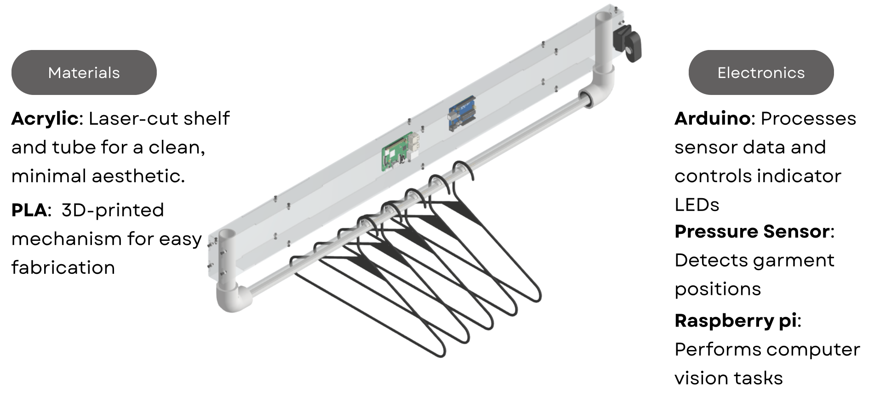
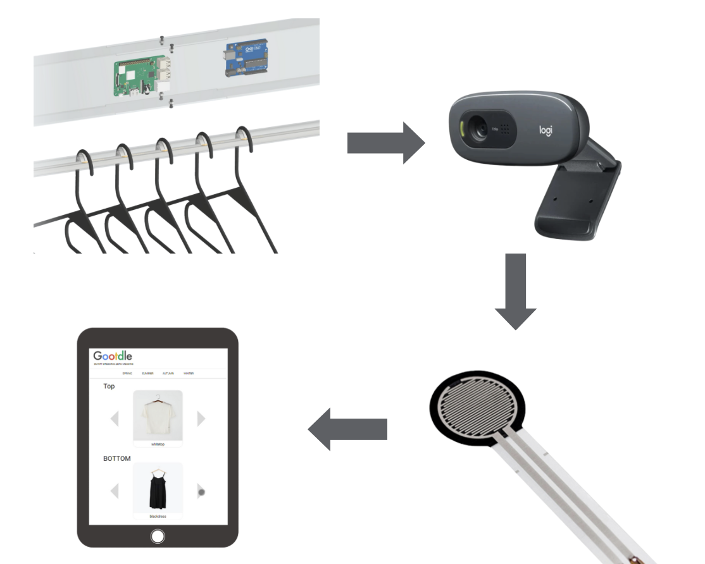
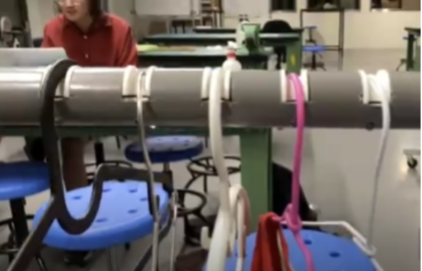
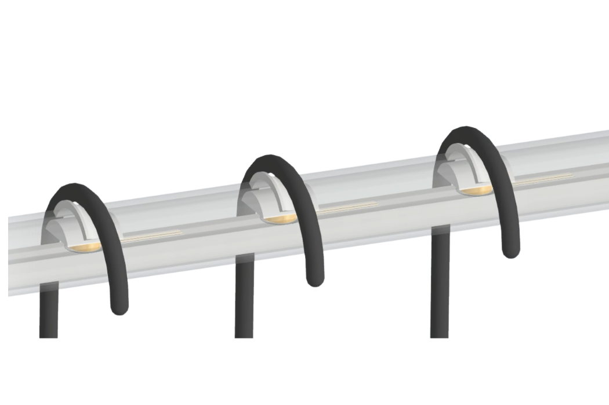
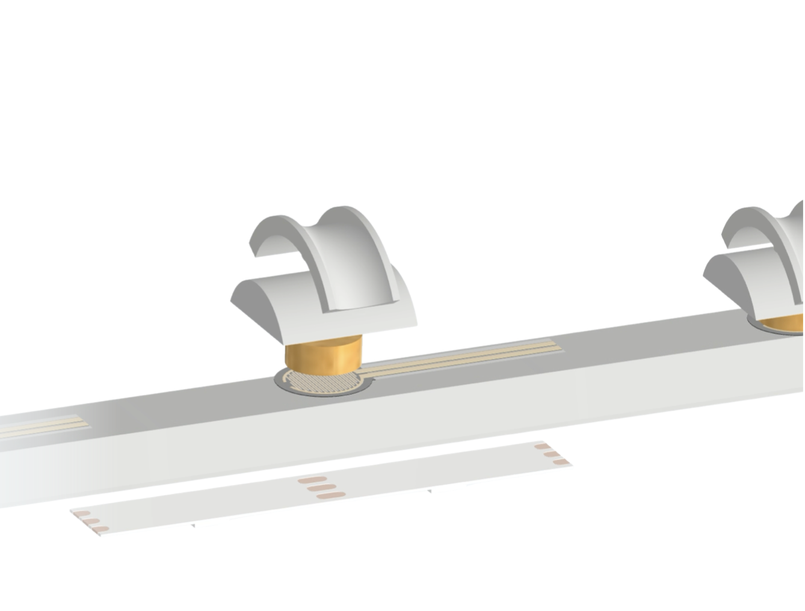

SMART WARDROBE
product design exploration

OVERVIEW
- Motivated by the challenge of locating items without creating closet clutter, this project explores a smart wardrobe concept.
- Defined the industrial design and core mechanism architecture.
- Integrated DFM/DFA into the mechanical design to ensure manufacturability, ease of assembly, and a smoother user experience.
- Implemented a camera‑equipped rail with MediaPipe‑based vision to identify garments, plus a web app to browse the catalog and compose OOTD looks.
HOW IT WORKS

- A camera captures garment images when items are placed on the rail; the vision pipeline extracts features and assigns an ID.
- A pressure sensor integrated with the rail provides a position index, allowing the system to localize each garment.
- The mapping between physical position and the digital catalog powers search and a simple web interface for browsing and outfit planning.
FIRST PROTOTYPE

- PVC is opaque, making indicator LEDs difficult to see.
- Cutting slots is challenging and must be repeated for each one.
- Assembly of the internal mechanism must be done individually.
FINAL DESIGN


- Replaced single indicator LEDs with an LED strip for simpler manufacturing and control.
- Switched from PVC to acrylic to improve LED visibility.
- Integrated a PVC cable duct (PVC wire channel), allowing the entire mechanism to slide in as one unit for faster assembly and easier maintenance.
- Reinforced the acrylic using the PVC cable duct to increase structural strength.
- Reduced drilling to a single hole for the 3D‑printed slot to transmit force to the sensor.
RECOGNITION
- Awarded the Best Wanted Product at the Google Taiwan Hardware Product Sprint.
- Collaborated with teammates from diverse backgrounds to prototype and present the concept.